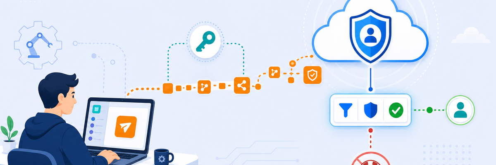

Lab 10: Apply Zero Trust Automation: Adding URL Filtering Policy
LAB 10
Scenario: Configure a ZIdentity OneAPI client, authenticate a Postman session against it, and use the ZIA REST API to programmatically create a URL filtering rule that blocks gambling websites for all users.

THINK FIRST · ZERO TRUST AUTOMATION
The OneAPI is Zscaler's unified REST API layer — it lets you do everything you can do in the portal, programmatically, enabling Infrastructure-as-Code approaches to security policy.
- Why would a security team prefer to create a URL filtering rule via API rather than the ZIA Admin portal — what does this enable that the portal cannot?
- What is the role of the OneAPI client in ZIdentity, and how does it differ from a regular admin user account?
- What would happen if the JSON payload for the URL filtering rule omits the "protocols": ["ANY_RULE"] parameter?
Configuration Requirements
Work through these four requirements across ZIdentity, Postman, and the ZIA API. Check each one off as you complete it.
OneAPI Client · ZIdentity Admin Portal → OneAPI Clients
Postman · Corp: Win Svr VM
ZIA REST API · ZIA API (https://zsapi.zscalerthree.net)
Testing Requirements
- After the API call succeeds (HTTP 200/201), open ZIA Admin Portal → Policy → URL Filtering
- Confirm the new URL filtering rule appears in the list with the correct settings
- Browse to a gambling site from the Corp: Client PC VM — confirm it is blocked
- Check ZIA Web Insights logs to confirm the block event is recorded
Where to get help
My Questions
My Notes
MENTAL NOTE
API-driven policy has three steps: (1) authentication — get a token from ZIdentity using OneAPI client credentials, (2) the API call — POST to ZIA with the token as Bearer auth and the rule JSON in the body (don't forget
"protocols": ["ANY_RULE"]), (3) verification — confirm in the ZIA portal that the rule was created correctly. The OneAPI client in ZIdentity is the bridge between your script and the ZIA API.